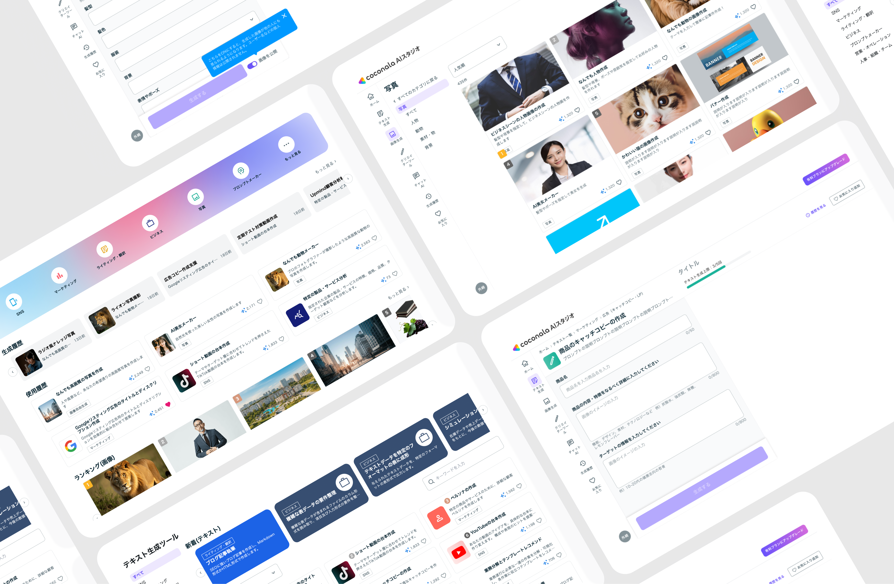
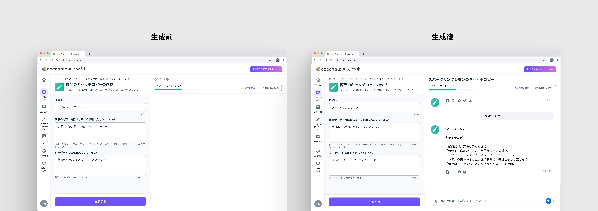

AI Studio
生成AIプロダクトを0→1で立ち上げ、ピボットから撤退まで伴走したデザインPJ

Overview
生成AIの新規事業を0→1で立ち上げ
- 「AIに不慣れな人でも、誰でも簡単に使える」をコンセプトに、ココナラAIスタジオをゼロからデザイン。
事業のフェーズ変化に、役割を変えて追従
- リリース → toC→toBピボット → 営業推進。局面ごとにPjM・デザイン・営業と役割を変えながら一貫して伴走。
撤退までを、当事者として経験
- 約1年の検証の末に撤退。その判断を事業の経済性とビジョンの両面から理解し、「発射角＝何を・誰のために作るか」の重要性を学んだ。
Summary
1人デザイナーとして生成AI事業を0→1で立ち上げ、C→Bピボット、そして撤退までを当事者として推進
😟 課題
生成AIサービスを
新規事業として立ち上げ
- チャット型UIでは、AIに不慣れな一般ユーザーが生成AIを使いこなせないという仮説があった
- PM不在で、要件定義から実装ディレクションまで事業責任者とデザイナー2人で担う必要があった
- 事業方針で、toC→toBへの転換が必要になった
😊 貢献
設計・スコープ判断・
越境を1人で推進
- 競合調査を起点に、約600種のテンプレート型UIを設計
- 外部エンジニア向けにデザインシステムを構築し、実装を高速化
- デザインを超え、ピボットのスコープ判断・営業まで横断してリード
🌱 結果・学び
1.5ヶ月でピボット、
撤退から得た“発射角”
- toBピボットを最小スコープに絞り1.5ヶ月でリリース。約10社が導入
- 事業は撤退。投資に対しリターンが見合わず、勝つための業種特化がビジョンと噛み合わなかった
- 「新規事業は“何を作るか（発射角）”で決まる」という学びを得た
Process
01
リリース
競合リサーチからUIコンセプトを設計。約600種のテンプレートとデザインシステムを構築し、0→1でリリース。
02
ピボット
toC→toBへ。土俵に立つための最小機能を見極め、約1.5ヶ月でリリース。
03
グロース
新規獲得機能の設計や将来像のUX提案を推進。営業専任不在の空白も越境して埋めた。
Phase 1 ─ リリース
1. 国内外の生成AIを徹底リサーチし、UIの型を決めた
参考になる国内事例が少なく、Writesonic・Jasperなど海外サービスまで対象を広げ、UIパターンと設計思想を整理しました。そこで立てたのが「チャット型ではなく、テンプレート型にすべき」という仮説です。自由入力は万能でも、初心者には「何を書けばいいか分からない」入口になる。用途ごとのテンプレートを埋めるだけで高品質な出力が返る形のほうが、迷わず使えるはずだと考えました。
2. 左入力・右出力、約600種のテンプレートを設計した
画面の左に入力項目、右にアウトプットを表示するUIを開発。最終的に約600種類のテンプレートを設計し、AIに不慣れな人でも——例えば商品説明文やブログ記事を——テンプレートを選んで項目を埋めるだけで作れるUIにしました。

3. 外部エンジニアとの連携を仕組み化し、開発を円滑に進めた
開発は外部のエンジニアと進めたため、認識の齟齬が起きやすい状態でした。コンポーネントを定義したデザインシステムを構築し、デザインと実装の手戻りを削減。あわせて毎日の定例MTGを設定し、日次で会話することで認識のズレを防ぎました。QAの段階では、どの不具合を優先して直すかの優先度づけも担当しています。
■ グラフィックデザイン
顧客獲得のためのmetaバナーやLPのデザインも、一気通貫で担当しました。

Phase 2 ─ ピボット
1. toC→toBへの方針転換を、提案者としても支えた
リリース後、事業は個人向け（toC）から法人向け（toB）へ方針転換しました。決定は事業責任者によるものですが、他社が同様に法人向けへ動いている事例をもとに、転換を提案していました。
2. 法人向けの機能を、1.5ヶ月でリリースまで持っていった
法人で使うには、個人向けには無かった機能が必要でした。たとえば、社内の複数メンバーをまとめて管理する機能と、自社の資料を読み込ませて回答の精度を上げる機能（RAG）です。あれもこれもと盛り込むとリリースが遅れるため、「法人向けとして、これが無いと他社と勝負にならない機能はどれか」を基準に絞り込みました。この2つを最優先と決め、残りは後回しに。方針転換から約1.5ヶ月でリリースしました。商談にも同席し、顧客の反応を要件に反映しています。

リリース後、約10社が導入。会社ごとにオリジナルのテンプレートを用意する形で、受注も生まれました。
Phase 3 ─ グロース
1. 新規顧客を増やすための機能を、デザイン・仕様から検討した
導入が進むと、次の課題は新規顧客の獲得でした。獲得につながる機能を、デザインと仕様の両面から検討し、エンジニアと実現性をすり合わせながら設計しました。
2. プロダクトの「将来の理想像」を、UX設計として描き提案した
目の前の機能追加だけでなく、プロダクトが将来どうあるべきかという理想の体験像をUXとして設計し、事業責任者やエンジニアに提案しました。短期の開発と、長期の方向性の両方に関わっています。
3. 営業の空白を、職種を越えて埋めた
営業の専任がまだおらず、プロダクトを売る人がいない状態でした。依頼を受け、テレアポも担当。プロダクトを最も理解している立場から顧客と直接話すことで、反応をそのまま開発に持ち帰れました。営業担当と協力し、費用対効果を示す営業資料も作成しています。
撤退 ─ なぜ、この事業は終わったのか
約1年の検証を経て、ココナラAIスタジオは撤退しました。理由は、事業の経済性とビジョンとの整合の両面にあります。
- 投資規模に対して、リターンが見合わなかった
- 勝つためには「業種特化」が必要だったが、それは「あらゆる人のストーリーに寄り添う」というココナラのビジョンと合致しない
- 結果として、市場で勝ち筋を描けないと判断された
撤退の判断を、事業の経済性とビジョンの観点から理解できたことが、このプロジェクトで得た学びの一つです。
Learning ─ 「発射角」という視点
このプロジェクトで得た一番の学びは、新規事業は「発射角」で決まる、ということです。
誰の・どんな課題に・どう刺すか。この発射角が最初からズレていると、どれだけ良いUIを作っても、速くリリースしても、ユーザーには届きません。「どう作るか」を磨くだけでは、「何を・誰のために作るか」が外れていれば成果につながらない。それを実感しました。
この経験から、「どう作るか」の手前にある「何を作るか」を決める側に関わりたいと考えるようになりました。